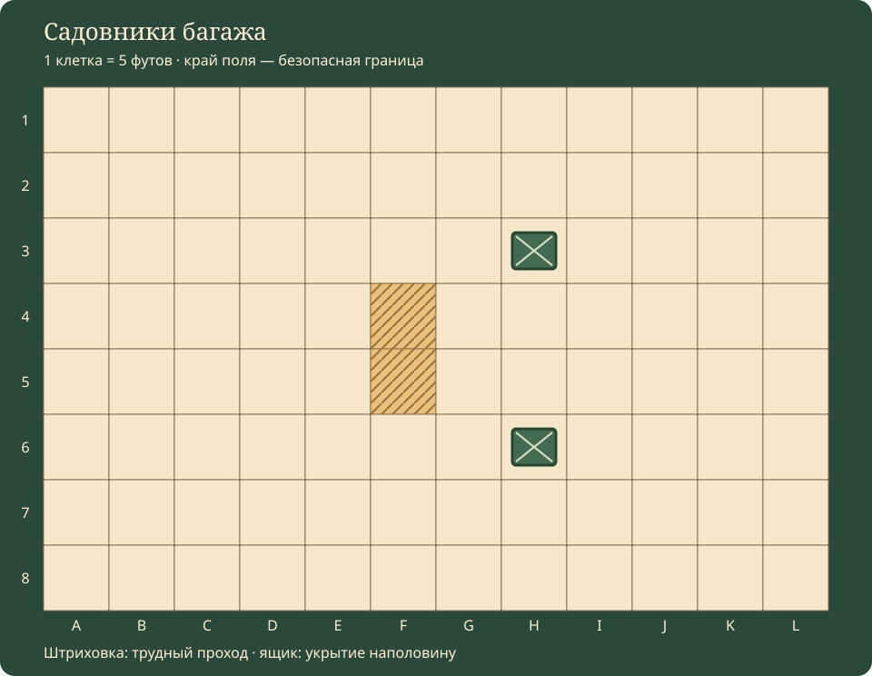
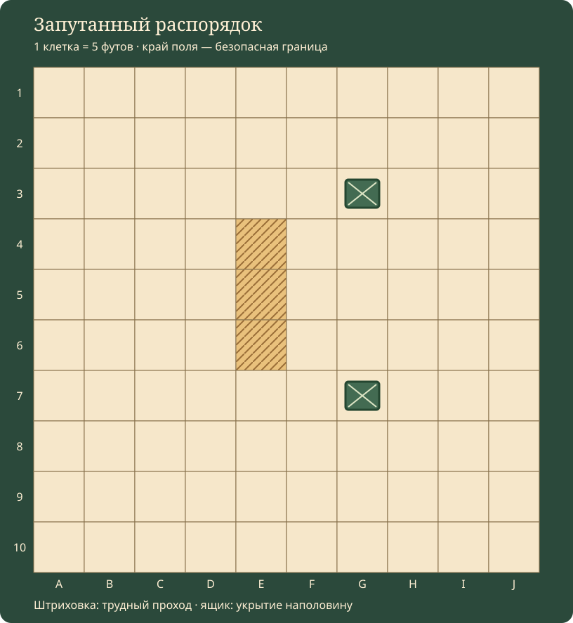
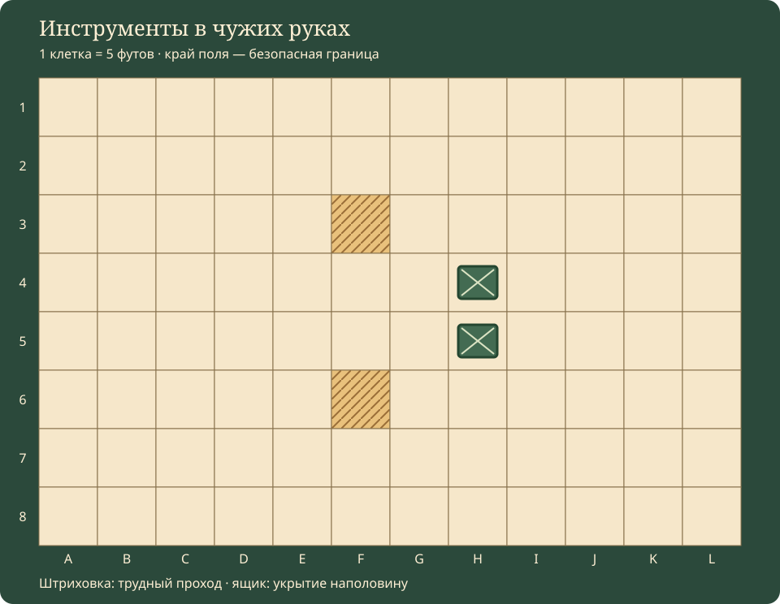
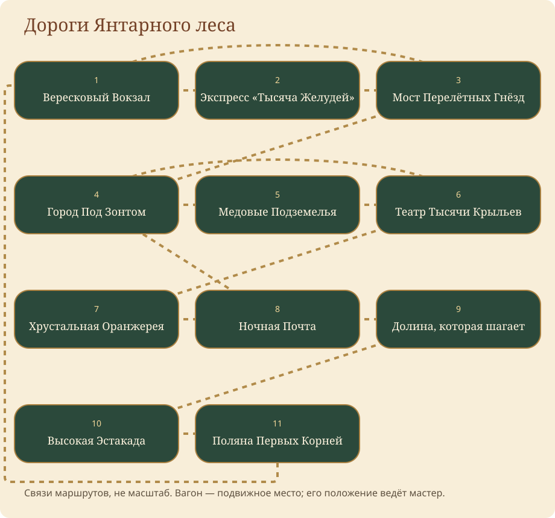

Пути, станции и смелые идеи
Три короткие встречи рассчитаны на троих героев. Сначала предложите мирное решение. Тактические клетки точно совпадают с пакетом кампании; нарисованные декорации не создают скрытых препятствий.
Фигуры для печатиСадовники багажа
Только если игроки выбрали бой. Марфа, ручной пропуск и помощь с грузом позволяют пройти мирно.



Начало героев: B3, B4, B5; четвёртый — B6. Садовники: K3, K5.
Багажный садовник: 10 HP, защита 11; Багажный садовник: 10 HP, защита 11
Одна атака за ход: мягкий упор 1d4 + 1; скорость 20 футов. Багажные садовники: +2 к атаке, остальные +3. Они предупреждают, не добивают лежащих и не сталкивают людей с высоты. На 0 HP автомат выключается без жестоких подробностей.
После первого раунда снова предложите мирный выход. При половине HP садовник останавливается на проверку — возможность поговорить или отключить его. Ведущий завершает бой обычной командой; это не скрытая автоматическая механика. Поражение допускает безопасное отступление, а здоровье восстанавливают штатный отдых и лечение.
Запутанный распорядок
Необязательная встреча. Приглашение Ивы, рабочий жетон, открытый проход или отключение автоматов сохраняют мирный путь.



Начало героев: B3, B4, B5; четвёртый — B6. Садовники: I3, I5, I7.
Садовник оранжереи: 14 HP, защита 12; Садовник оранжереи: 14 HP, защита 12; Садовник оранжереи: 14 HP, защита 12
Одна атака за ход: мягкий упор 1d4 + 1; скорость 20 футов. Багажные садовники: +2 к атаке, остальные +3. Они предупреждают, не добивают лежащих и не сталкивают людей с высоты. На 0 HP автомат выключается без жестоких подробностей.
После первого раунда снова предложите мирный выход. При половине HP садовник останавливается на проверку — возможность поговорить или отключить его. Ведущий завершает бой обычной командой; это не скрытая автоматическая механика. Поражение допускает безопасное отступление, а здоровье восстанавливают штатный отдых и лечение.
Инструменты в чужих руках
Только по выбору группы. Машины не сталкивают людей с моста. Жетон мастера, помощь Вельта или отключение на стоянке решают конфликт.



Начало героев: B3, B4, B5; четвёртый — B6. Садовники: K3, K5.
Ремонтный садовник: 14 HP, защита 12; Ремонтный садовник: 14 HP, защита 12
Одна атака за ход: мягкий упор 1d4 + 1; скорость 20 футов. Багажные садовники: +2 к атаке, остальные +3. Они предупреждают, не добивают лежащих и не сталкивают людей с высоты. На 0 HP автомат выключается без жестоких подробностей.
После первого раунда снова предложите мирный выход. При половине HP садовник останавливается на проверку — возможность поговорить или отключить его. Ведущий завершает бой обычной командой; это не скрытая автоматическая механика. Поражение допускает безопасное отступление, а здоровье восстанавливают штатный отдых и лечение.
Станции

Вечера 1–2 открывают расследование. Добровольное исправление Ивы доступно в поезде с начала игры; обычно Марфа показывает его при возвращении от моста во втором вечере. Не удерживайте его ради позднего поворота. Город, пещеры и театр в 3–5 можно менять местами. В оранжерее проверяют ограниченную гипотезу об условиях роста, а не впервые разоблачают исследовательницу. После Береста игроки практически обеспечивают станции; к концу девятого вечера выбранный обычный или резервный режим уже действует. Погоня десятого вечера учитывает действительное место Тоша и состояние колокола. Одиннадцатый вечер — прогулка и обратимая проба будущего дома, без повторного совета о снабжении. Двенадцатый опирается только на реальные решения.
Вересковый Вокзал — Экспресс «Тысяча Желудей»: Посадка с платформы; без проверки
Вересковый Вокзал — Мост Перелётных Гнёзд: Поездом или пешком по служебной тропе
Экспресс «Тысяча Желудей» — Мост Перелётных Гнёзд: Первая остановка
Мост Перелётных Гнёзд — Город Под Зонтом: Основная ветка и береговая дорога
Город Под Зонтом — Медовые Подземелья: Нижняя ветка; есть подъёмник и тропа
Город Под Зонтом — Театр Тысячи Крыльев: Лесная ветка; Медовые Подземелья и Театр можно поменять местами
Медовые Подземелья — Театр Тысячи Крыльев: Короткая ветка через грибную рощу
Театр Тысячи Крыльев — Хрустальная Оранжерея: Служебная станция оранжереи
Хрустальная Оранжерея — Ночная Почта: Почтовая ветка и общественная дорога
Ночная Почта — Долина, которая шагает: Линия к тихой дальней остановке
Ночная Почта — Город Под Зонтом: Обратный рейс для помощи городам
Долина, которая шагает — Высокая Эстакада: Высокая ветка; есть обходная тропа
Высокая Эстакада — Поляна Первых Корней: Тупик у реки и пеший подход
Поляна Первых Корней — Вересковый Вокзал: Обратная дорога для эпилога